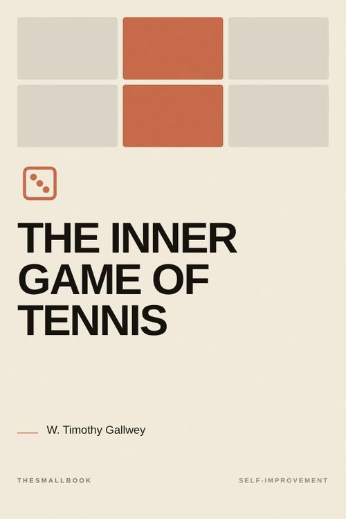

Library › Authors › W. Timothy Gallwey
Books by W. Timothy Gallwey
W. Timothy Gallwey has one book in the library. Every book here is read down to the big idea, the lessons, the lines worth keeping and the actions worth taking. Start with the summary, then buy the full book if it earns a place on your shelf.

The Inner Game of Tennis
1974 · 7 min · 9 lessons
Quiet the inner critic, trust your body's own learning, and performance improves by itself - in tennis, work and life.
Gallwey, a tennis coach, discovered that most performance gains come not from better technique but from stilling the inner dialogue - the Self 1 (judging, instructing, criticising) vs Self 2 (the body's natural, capable performer). His method is counter-intuitive: stop trying, watch rather than instruct, let the body learn by attention instead of command. The 'inner game' applies to any skill - writing, coding, music, sales - and its tools (awareness, non-judgemental observation, letting go of the result) are the...
Lessons in the summary
- Self 1 vs Self 2
- Quiet the Mind, Not the Body
- Let the Body Learn
- Let Go of the Result
- The Inner Game of Work
- The Quiet Eye
- The Opponent Is the Partner
- The Goldfish of Attention: The One-Second Unit
- The Inner Game of the Critic
Lines worth keeping
- The opponent within one's own head is more formidable than the one on the other side of the net.
- Concentration is the essence of all excellence.
- When the mind is quiet, the body performs at its best - which is why the best players are described as being 'in the zone'.
Questions W. Timothy Gallwey helps answer
Read nearby authors next
- Amish Tripathi 6 books
- Robin Sharma 5 books
- A.P.J. Abdul Kalam 4 books
- Adam Grant 4 books
- Cal Newport 4 books
- Chetan Bhagat 4 books
- Jonathan Haidt 3 books
- Ryan Holiday 3 books
Questions W. Timothy Gallwey helps answer
Where should I start with W. Timothy Gallwey? Start with The Inner Game of Tennis: Quiet the inner critic, trust your body's own learning, and performance improves by itself - in tennis, work and life.